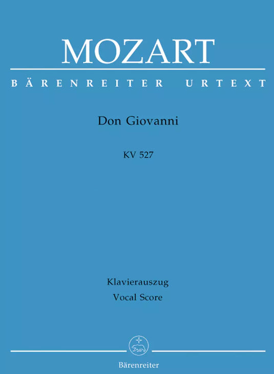
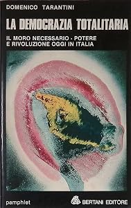
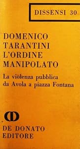
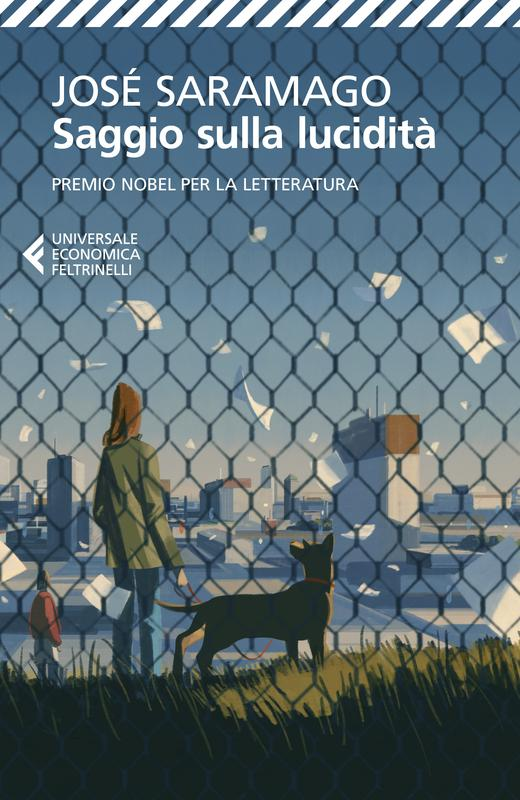
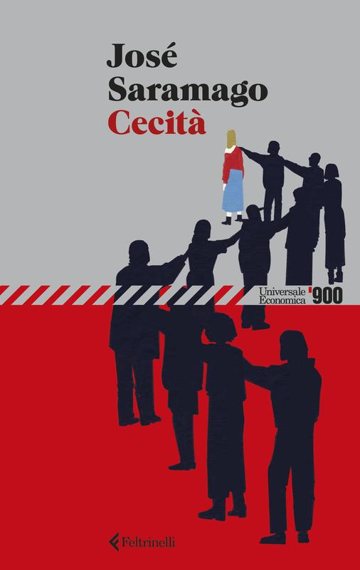
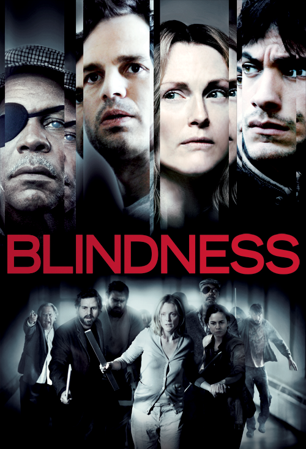
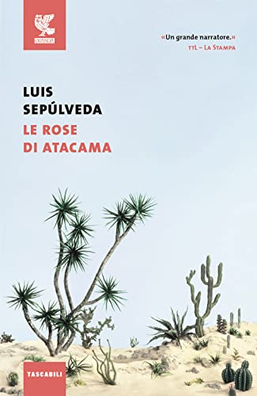
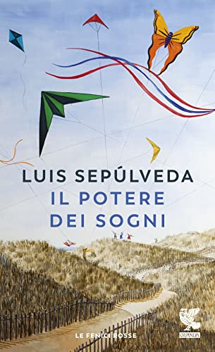

1:04:27 · 13 OPERE
Sulla necessità di continuare ad offrire contenuti razionali.
Il filo del discorso
Perché continuare a proporre un discorso razionale quando sembra destinato a restare ai margini? Il relatore risponde che la parola condivisa può ancora aprire uno spazio di autonomia, purché non venga ridotta a slogan, scenografia o risposta pronta. La prima parte distingue informazione rapida e comprensione, collegando la qualità del discorso alla partecipazione democratica. I libri di Domenico Tarantini introducono la discussione sulla propaganda di guerra e sulla memoria politica italiana; le interpretazioni di una trama comune fra vicende diverse rimangono tesi del relatore. Il centro letterario è Saggio sulla lucidità di José Saramago, letto accanto a Cecità: il gesto del voto bianco diventa occasione per discutere rappresentanza, linguaggio e reazione del potere. Il racconto è mantenuto distinto dalla cronaca e dalle polemiche contemporanee sulle politiche sanitarie e sulla guerra. La seconda parte affronta l’etichetta di complotto attraverso il caso Kennedy e un’intervista a Fauci, con note che distinguono domande, prove, ipotesi e attribuzioni errate. Nel finale Sepúlveda e i versi di Marcos Ana riportano il discorso alla capacità di immaginare un mondo diverso. La difesa dei sogni è proposta come responsabilità culturale e civile: continuare a ragionare, sostenere le proprie affermazioni e lasciare aperto un luogo di confronto, senza convertire analogie e giudizi polemici in fatti già dimostrati.
I libri nel discorso

Don Giovanni (Il dissoluto punito ossia il Don Giovanni, K 527)
Copertina: Bärenreiter Urtext · riduzione canto e pianoforte BA 4550-90
Copertina autentica della riduzione per canto e pianoforte Bärenreiter, BA 4550-90, ISMN 9790006450459. Titolo, K 527, compositore e indicazione Vocal Score sono leggibili. Non è una copertina discografica o la partitura autografa e non viene attribuita al video. L’ISMN identifica l’edizione musicale; non viene spacciato per ISBN.
Mozart e Don Giovanni sono espliciti a 318–326. Esempio di opera musicale nella storia dell’immaginazione, non esecuzione discografica identificata.
Passaggio 5:26 ↗ · Fonti e libro ↗
La democrazia totalitaria. Il Moro necessario. Potere e rivoluzione oggi in Italia. Le lettere di Moro
Copertina: Bertani Editore · 1979, Testi/Pamphlet 19
Fotografia autentica dell’esemplare Bertani 1979 offerto da FolignoLibri nel catalogo AbeBooks, inventario 31925212021. Frontale intero con autore e titolo, conservato alla risoluzione originale del catalogo, senza ricostruzioni. Il numero d’inventario del venditore non è un ISBN. Non si assegna un ISBN non documentato.
Domenico Tarantini, La democrazia totalitaria e 1979 espliciti a 916–936; passo sulla guerra attribuito a pagina 74, letto da 1449. Identità editoriale verificata, pagina dell’esemplare non vista direttamente.
Passaggio 15:29 ↗ · Fonti e libro ↗
L’ordine manipolato. La violenza pubblica da Avola a Piazza Fontana
Copertina: De Donato · 1970, Dissensi 30
Fotografia autentica della copertina De Donato nel catalogo AbeBooks, inventario 32417311111. Sono visibili autore, titolo, sottotitolo, editore e numero Dissensi 30; frontale intero a risoluzione limitata dichiarata, senza ingrandimenti artificiali. Nessun ISBN inventato dal codice del venditore.
L’ordine manipolato, anno 1970 e sottotitolo sulla violenza pubblica da Avola a Piazza Fontana espliciti a 957–966. Editore De Donato distinto da Bertani.
Passaggio 15:57 ↗ · Fonti e libro ↗
Qoèlet (Ecclesiaste)
Identificazione probabile
Copertina: Adelphi, Biblioteca Adelphi 414, 2001
Edizione autonoma del libro biblico, versione e commenti di Guido Ceronetti. Non è una copertina della Bibbia integrale né un’edizione confermata nel video.
La formula nulla di nuovo sotto il sole è attribuita al testo biblico. Collegamento probabile a Qoèlet 1,9, titolo non pronunciato.
Passaggio 22:05 ↗ · Fonti e libro ↗
Saggio sulla lucidità (Ensaio sobre a Lucidez)
Copertina: Feltrinelli · Universale Economica, edizione 2013
Copertina autentica scaricata direttamente dalla scheda dell’editore, ISBN 9788807882159, traduzione Rita Desti. Il sito data l’edizione tascabile 22 maggio 2013; non si identifica questa ristampa con la copia del video soltanto perché viene nominata Feltrinelli. Titolo e autore sono visibili; nessun ritocco.
Saramago e anno 2004 espliciti, titolo originale portoghese deformato dall’ASR a 1705.96; titolo italiano a 1876.49. Trama del voto bianco confermata dalla Fondazione; romanzo, non saggio teorico.
Passaggio 28:25 ↗ · Fonti e libro ↗
Ulisse (Ulysses)
Copertina: Einaudi, Letture Einaudi, 2013, traduzione di Gianni Celati, ISBN 9788806191818. Originale 1922.
Immagine autentica dell’opera, controllata visivamente; l’edizione di riferimento non è attribuita al filmato.
Ulysses e Joyce espliciti a 1751–1761 nel confronto stilistico. Riutilizzato Ulisse già censito; nessun titolo di Hrabal dal solo nome.
Passaggio 29:11 ↗ · Fonti e libro ↗
Cecità (Ensaio sobre a Cegueira)
Copertina: Feltrinelli · UE900, edizione 2026
Copertina autentica dell’edizione Feltrinelli UE900 uscita il 13 gennaio 2026, ISBN 9788807950766, traduzione Rita Desti. Scaricata direttamente dall’editore, immagine intera con autore e titolo. È una ristampa successiva al filmato e non viene attribuita alla copia citata. Non è la copertina di Saggio sulla lucidità o del film.
Saggio sulla cecità e Cecità pronunciati a 1870–1877, trama dell’epidemia allegorica a 1883–1894. Stesso romanzo originale portoghese del 1995, non due opere.
Passaggio 31:10 ↗ · Fonti e libro ↗
Blindness
Identificazione probabile
Copertina: Miramax · locandina ufficiale del film
Locandina autentica e intera pubblicata dalla distribuzione Miramax: titolo, cast e composizione della campagna sono visibili. È l’immagine del film tratto da Saramago, non quella del romanzo. L’anno 2008 è verificato separatamente presso il Festival di Cannes, correggendo il campo release discordante della pagina Miramax.
Ricordato un film tratto dal romanzo Cecità, senza titolo o regista: identificazione probabile con Blindness di Meirelles, verificato presso Miramax e Cannes.
Passaggio 31:34 ↗ · Fonti e libro ↗
Countering Criticism of the Warren Report
Identificazione probabile
Prima pagina del dispaccio: PRIMA PAGINA DEL DISPACCIO, riprodotta dalla pagina 3 del PDF archivistico, dopo due pagine descrittive. Sono visibili il titolo, la sigla di dispaccio BD5847, l’annotazione manoscritta 1035-960, la data dattiloscritta 4/1/67 e il timbro 24 JAN 1967. Si conserva la discordanza materiale delle date; la scheda archivistica indica 4/1/1967. Filigrana Mary Ferrell Foundation. Non è una copertina libraria.
Facsimile della prima pagina effettiva, pagina 3 del PDF; schede di catalogo escluse dall’immagine. Date e annotazioni riprodotte senza correzioni.
Memorandum CIA sulle critiche all’assassinio Kennedy descritto senza titolo. Collegamento probabile al documento 1035-960, 1967, già censito. Esso non inventò l’espressione conspiracy theory.
Passaggio 43:54 ↗ · Fonti e libro ↗
Accessories After the Fact. The Warren Commission, the Authorities & the Report on the JFK Assassination
Identificazione probabile
Copertina: Skyhorse Publishing, 3 settembre 2013, 512 pagine, ISBN 9781620879979. Prima edizione 1967. Prefazione di Richard S. Schweiker e introduzione di Peter Dale Scott: contributori distinti dall’autrice Sylvia Meagher.
Copertina autentica Skyhorse vista integralmente: fondo bianco, titolo rosso, fasce blu, sottotitolo e Sylvia Meagher in nero, contributi di Schweiker e Scott indicati in basso. Non è la copertina della prima edizione del 1967.
Titolo reso Accessories of the Fact e erroneamente attribuito a Mark Lane. Riusata la voce di Sylvia Meagher, prima edizione 1967, verificata presso editore. Identificazione probabile del titolo ricordato, non attribuzione certa a Lane.
Passaggio 46:05 ↗ · Fonti e libro ↗
Le rose di Atacama (Historias marginales)
Copertina: Guanda · Le Fenici, ristampa 2016
Copertina autentica della ristampa Guanda con ISBN 9788823514560, distribuita nel catalogo AbeBooks. Titolo, autore e marchio sono visibili e coincidono con la scheda bibliografica dell’edizione 2016; non attribuita alla copia del video. Non è la copertina di Il potere dei sogni.
Sepúlveda e Le rose di Atacama espliciti a 3249–3263, seguiti dalla frase su società cresciute nella paura. Traduzione e identità editoriale verificate, formulazione non certificata su un esemplare del video.
Passaggio 54:22 ↗ · Fonti e libro ↗
Il potere dei sogni (El poder de los sueños)
Identificazione probabile
Copertina: Guanda · Le fenici rosse, ristampa 2020
Copertina autentica Guanda, ISBN 9788823527409, ristampa 2020, traduzione Ilide Carmignani, distribuita dal catalogo AbeBooks. Non è una prima edizione 2006 né la copertina di una raccolta di Marcos Ana. Il titolo e l’autore sono visibili; nessuna edizione viene attribuita al video.
Secondo volume di Sepúlveda senza titolo pronunciato; il ricordo di Marcos Ana, la poesia e il manifesto finale coincidono con Il potere dei sogni. Collegamento probabile, distinto dalla raccolta spagnola 2020 usata come riscontro del medesimo intervento.
Passaggio 56:09 ↗ · Fonti e libro ↗Será que mis sueños asustan al tirano… (poesia identificata dall’incipit)
Copertina di Il potere dei sogni, volume che cita i versi di Marcos Ana: Guanda · Il potere dei sogni, raccolta di Sepúlveda che cita il poema
Copertina della raccolta Il potere dei sogni di Luis Sepúlveda, Guanda 2020, ISBN 9788823527409, usata come volume che trasmette la citazione. Non è una copertina di un libro di Marcos Ana né una pubblicazione autonoma della poesia. L’ISBN appartiene alla raccolta di Sepúlveda. Non si inventano titolo autonomo, edizione originaria o data dei versi.
Marcos Ana è nominato già a 3539, versi letti in traduzione a 3714–3746. La voce conserva l’incipit come identificazione, non inventa un titolo ufficiale. Citazione mediata da Sepúlveda; nome Fernando Macarro Castillo riscontrato in PARES.
Passaggio 1:01:54 ↗ · Fonti e libro ↗Minutaggi ricavati da testi automatici, da riascoltare. Le identificazioni probabili sono segnalate accanto ai libri.